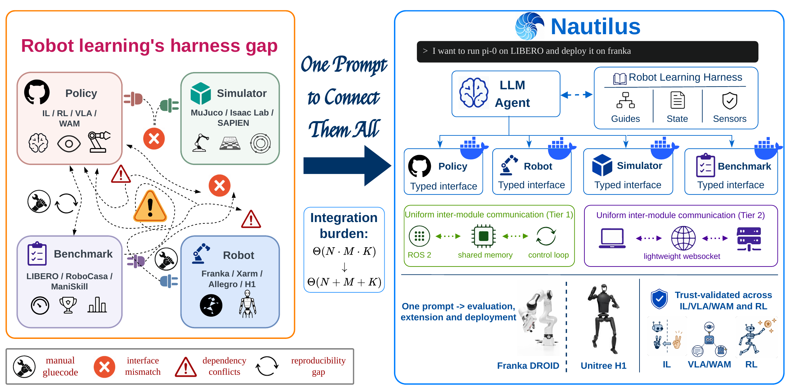
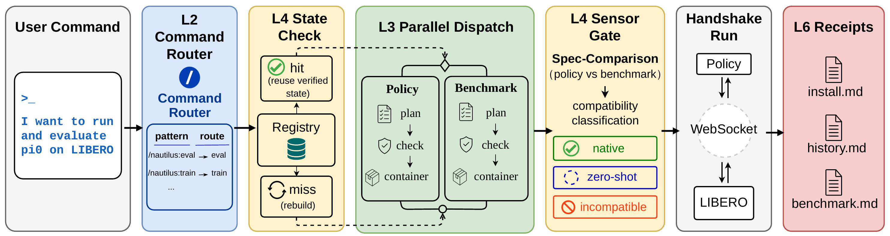
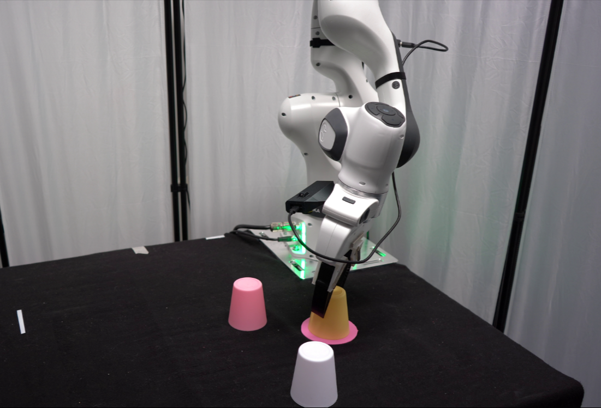
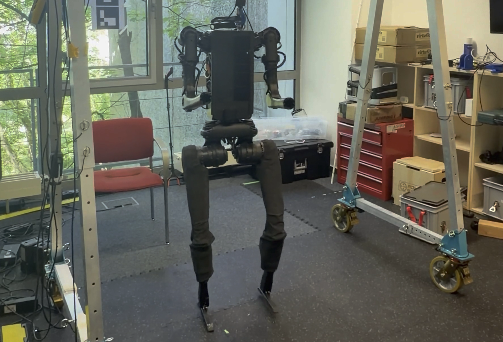

Robot learning research is fragmented across policy families, benchmark suites, and real robots; each implementation is entangled with the others in a complex combination matrix, making it an engineering nightmare to port any single element. General-purpose coding agents may occasionally bridge specific setups, but cannot close this gap at scale because they lack the procedural priors and validation practices that characterize robotics research workflows.
We propose Nautilus, an open-source harness that turns a single user prompt—for example, “Evaluate policy A with benchmark B”—into ready-to-use reproduction, evaluation, fine-tuning, and deployment workflows. Nautilus provides: plug-and-play agent skill sets with distilled priors from robotics research; typed contracts among policies, simulators/benchmarks, and real-world robots; unified interfaces and execution environments; and a trustworthy agentic coding workflow with explicit, automated validation and testing at each milestone.
Nautilus can not only automatically generate the required adapters and containers for existing implementations, but also wrap and onboard new or user-provided policies, simulators/benchmarks, and robots, all connected via a uniform interface. Like a nautilus shell that grows by adding chambers, Nautilus scales by extending its execution in chambered units—a research harness for scalability rather than a hand-curated framework.

The harness gap in robot learning, and how Nautilus closes it. Existing workflows repeatedly rebuild policy–benchmark–robot glue, yielding a field-scale integration burden of Θ(N·M·K). Nautilus introduces a shared harness—typed contracts, chambered execution, and uniform transport, plus a content layer of Guides, Sensors, and State—reducing the burden to Θ(N+M+K).
Nautilus is a Claude Code plugin organized into two layers. The substrate rests on three engineering invariants—typed interface contracts, chambered execution, and uniform inter-module transport—giving the agent a stable, policy-agnostic surface to reason over. On top sits a content layer: Guides shape the agent's behavior before code generation, Sensors validate outputs after generation, and State (an MCP-served, JSON-schema-validated contract registry) mediates between modules.
A researcher describes the experiment in natural language. The Nautilus orchestrator routes the request to a typed CLI command, dispatches the chambered subagents that generate adapters, runs validation, and writes reproducibility receipts—all without leaving the prompt.
infer(obs) → actions with optional reset. IL / VLA / RL / WAM families behind one typed contract.
reset / get_observation / apply_action / safe_stop. Same surface in sim and on hardware.
Isaac Sim, MuJoCo, and SAPIEN treated as benchmark backends, not a separate axis.
Task suite + success criteria + trust-validation hooks. Plug-in extension via 3–5 typed methods.

Execution trace for the running example π0 on LIBERO. The orchestrator routes the natural-language request to /nautilus:eval; State, subagents, Sensors, and workspace artefacts turn the request into a contract-checked, chambered, reproducible evaluation.
For each candidate (method, benchmark) entry, we run a released policy with its official checkpoint through the same Nautilus-generated wrapper and compare the resulting success rate against the corresponding published reference. We impose no fixed pass/fail threshold: small deviations support reuse of the wrapper, while larger deviations are retained transparently for future calibration. The table below covers 15 (method, benchmark) pairs spanning the IL, VLA, and WAM families.
| Family | Method | Benchmark | Success (%) | Reference (%) | Δ (%) |
|---|---|---|---|---|---|
| IL | Diffusion Policy | LIBERO | 70.2 | 72.4 | −2.2 |
| Diffusion Policy | ManiSkill | 32.4 | 30.2 | +2.2 | |
| Diffusion Policy | RoboTwin | 26.4 | 28.0 | −1.6 | |
| Diffusion Policy | ALOHA | 75.8 | 77.5 | −1.7 | |
| ACT | RoboTwin | 30.0 | 29.7 | +0.3 | |
| ACT | ALOHA | 72.8 | 72.3 | +0.5 | |
| VLA | π0 | LIBERO | 93.6 | 94.2 | −0.6 |
| π0 | RoboTwin | 42.6 | 46.4 | −3.8 | |
| π0.5 | LIBERO | 97.0 | 96.8 | +0.2 | |
| π0.5 | RoboCasa | 18.6 | 16.9 | +1.7 | |
| OpenVLA | LIBERO | 78.2 | 76.5 | +1.7 | |
| OpenVLA | ManiSkill | 4.0 | 4.8 | −0.8 | |
| SmolVLA | LIBERO | 88.2 | 87.3 | +0.9 | |
| WAM | cosmos-policy | LIBERO | 98.4 | 98.5 | −0.1 |
| cosmos-policy | RoboCasa | 66.7 | 67.1 | −0.4 | |
| Motus | RoboTwin | 86.9 | 87.0 | −0.1 |
Most deviations fall within ±2%; the largest single deviation we observe is −3.8% (π0 on RoboTwin). Deviations are reported transparently rather than gated by an arbitrary cutoff.
We construct a leave-one-benchmark-out testbed across IL and VLA pairs: given a public repository with a released checkpoint for a target benchmark, the agent reconstructs the missing benchmark support. This simulates a realistic researcher workflow while retaining oracle validation against the published score.
Achieving a reusable, interface-compliant wrapper costs roughly the same as vanilla one-off integration. The agent reaches the trust band on 98.7% of pairs with Opus and 98.0% with Sonnet. Removing the typed-interface templates drops wrap success to 55.3% and increases token cost 3.6×—evidence that the substrate, not raw model capability, is doing the work.
The same Policy interface, WebSocket endpoint, and Robot contract carry across embodiments. On Franka Panda, we deploy the reproduced π0.5 wrapper to a pick-and-place task with zero policy-code changes; time from a passing simulation run to the first real-arm rollout is ~1.5 hours, dominated by Docker build rather than per-policy integration. On Unitree H1, an RL-trained locomotion policy is deployed through the same WebSocket endpoint and platform container—only the hardware container and launch namespace differ.


nautilus-collect — VR & GELLO Teleoperation
nautilus-collect is a chambered data-collection platform implementing the same Robot typed contract used in evaluation and deployment. The same code path serves teleoperated data collection and closed-loop policy rollout—differing only in the action source. Adding a new teleoperation modality is a one-class extension.